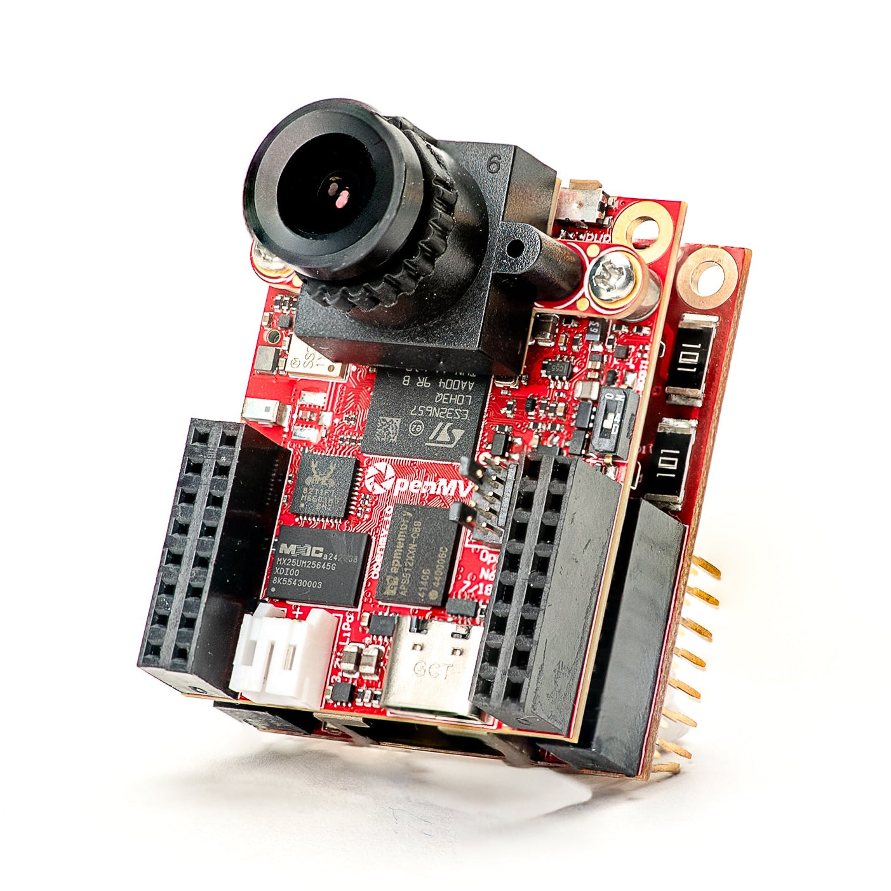
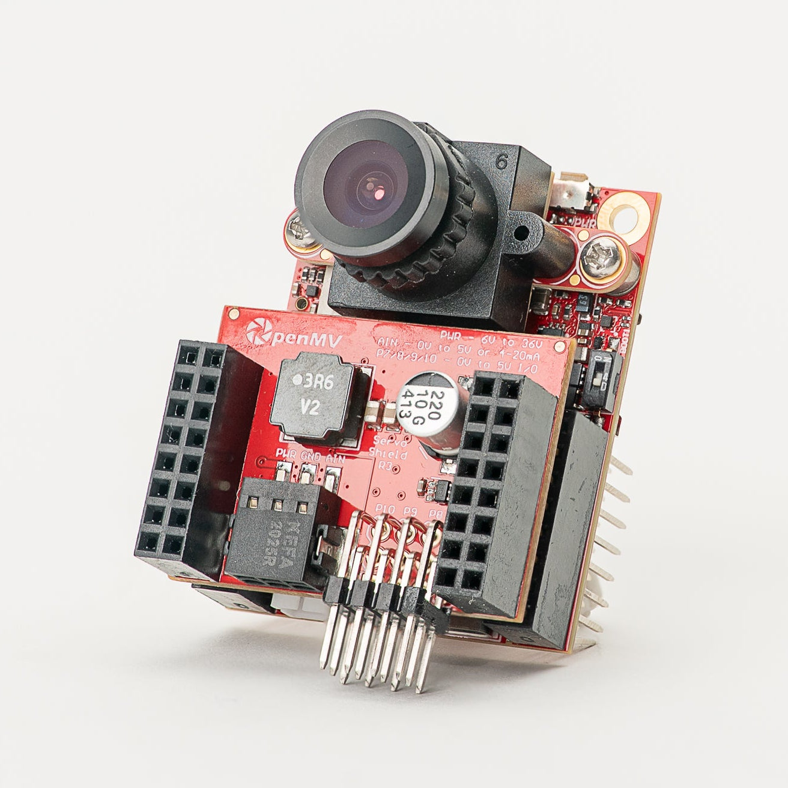
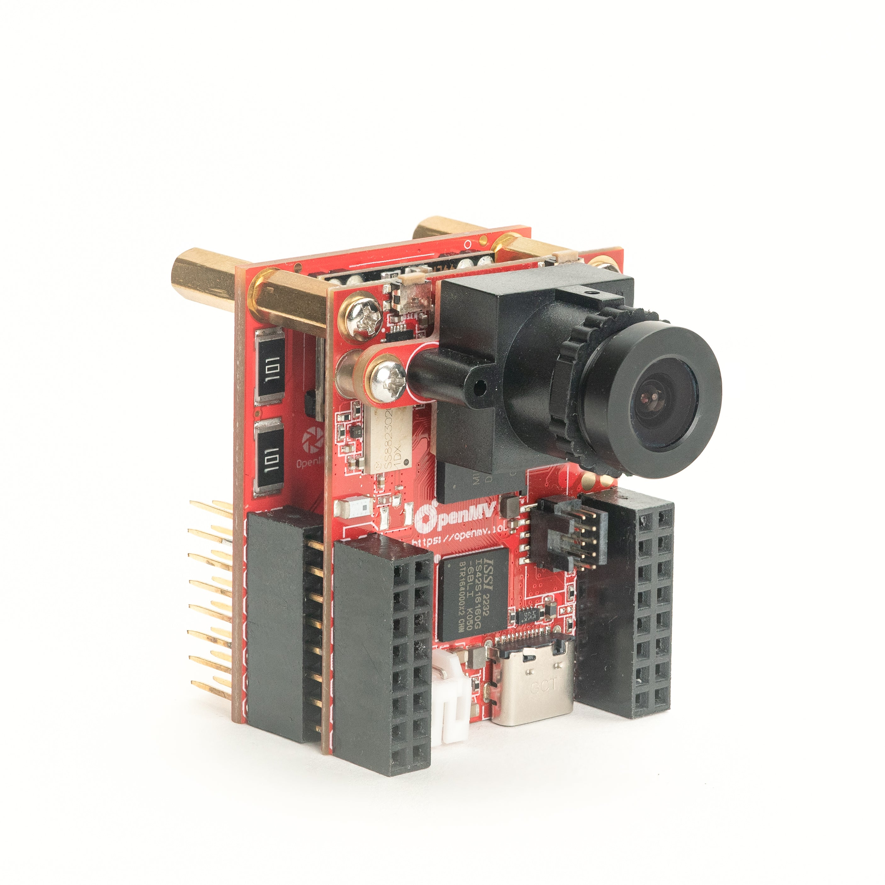
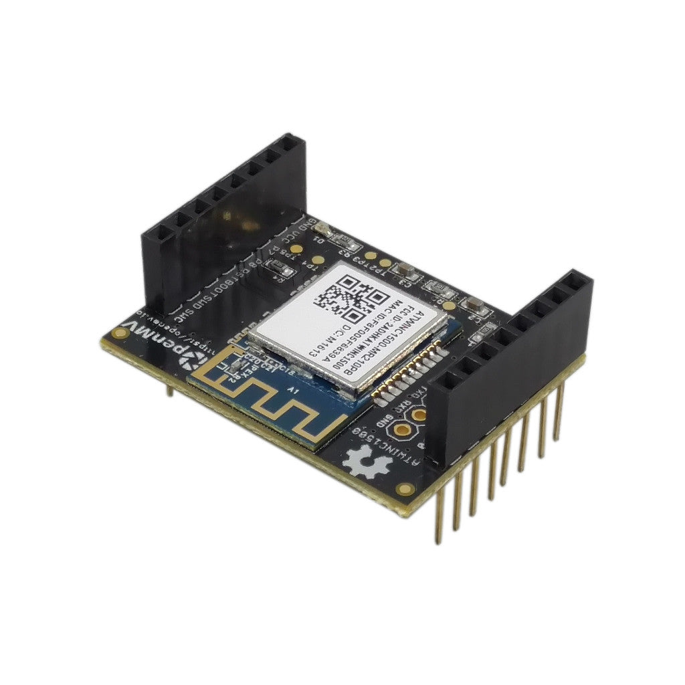
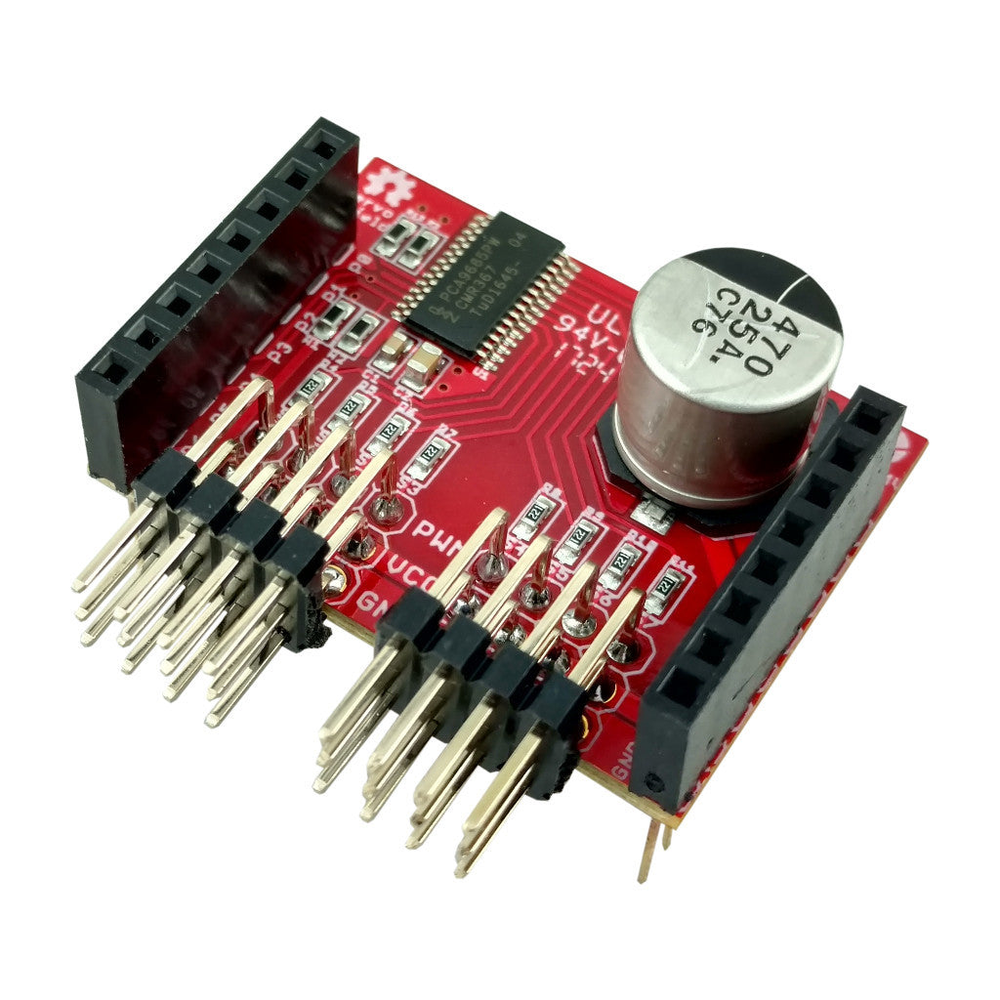

Shields OpenMV¶
Placas de expansão que se ligam a uma OpenMV Cam, estendendo-a com conectividade de rede, controlo de motores, ecrãs, sensores e muito mais. Cada página descreve o que o shield faz, as especificações principais e as APIs para o controlar a partir do MicroPython.
Shields modernos¶

Gigabit PoE Shield
Ethernet Gigabit com PoE para transmissão de maior largura de banda.
Explorar →
Servo Shield
Controla até 4 servos com até 5A enquanto alimenta a câmara, entrada de 6–36V.
Explorar →
Battery Shield
Entrada de bateria 1,8–5,5V via conector DC barrel, mais entrada alargada 6–36V.
Explorar →
Touch LCD Shield
LCD SPI de 2,3" 320×240 com multi-toque capacitivo e Qwiic.
Explorar →
PoE Shield
Ethernet 10/100 com Power-over-Ethernet.
Explorar →
PIR Shield
Detetor de movimento em standby de 6µA com iluminação branca e IR de 850 nm.
Explorar →
CAN/RS232 Shield
CAN-FD a 8 Mb/s mais RS-232 a 1 Mb/s para veículos e série legado.
Explorar →
RS422/RS485 Shield
Série diferencial a 10 Mb/s para barramentos industriais de longa distância.
Explorar →
Driver Shield
Dois drivers de motor de 3A ou quatro drivers de linha de 1,5A, 6–36V.
Explorar →
Relay Shield
Dois relés de 60 W para comutação de cargas AC/DC, entrada de 6–36V.
Explorar →Acessórios AE3¶


Shields legado¶

LCD Shield
TFT SPI de 1,8" 128×160 para pré-visualização autónoma.
Explorar →
WiFi Shield
Wi-Fi a 2,4 GHz para OpenMV Cams sem conectividade de rede integrada.
Explorar →
Proto Shield
Área de prototipagem de 10×10 furos com rails de 3,3V e GND.
Explorar →
Motor Shield
Driver de ponte H de canal duplo TB6612FNG com regulador de 5V para alimentação por bateria.
Explorar →
Pan and Tilt Shield
Três canais de servo com regulador de 5V a alimentar a câmara e os servos.
Explorar →
TV Shield
Saída de vídeo analógico NTSC 352×240 via chip VS23S010 SPI-para-NTSC.
Explorar →
Wireless TV Shield
Saída de vídeo NTSC com transmissor FPV analógico de 5,8 GHz integrado.
Explorar →
QWIIC Shield
Dois conectores Qwiic JST-SH para periféricos I2C em cadeia.
Explorar →
Light Shield
Nove LEDs brancos de alta potência com driver TPS61169 e regulação DAC/PWM.
Explorar →
Servo Shield
Controlador de servo / PWM PCA9685 de oito canais via I2C.
Explorar →
CAN Shield
Barramento CAN a 1 Mb/s com conector DB9 e regulador de 12V.
Explorar →
Thermopile Shield
Array de sensor térmico de 16×4 com temperatura por pixel.
Explorar →